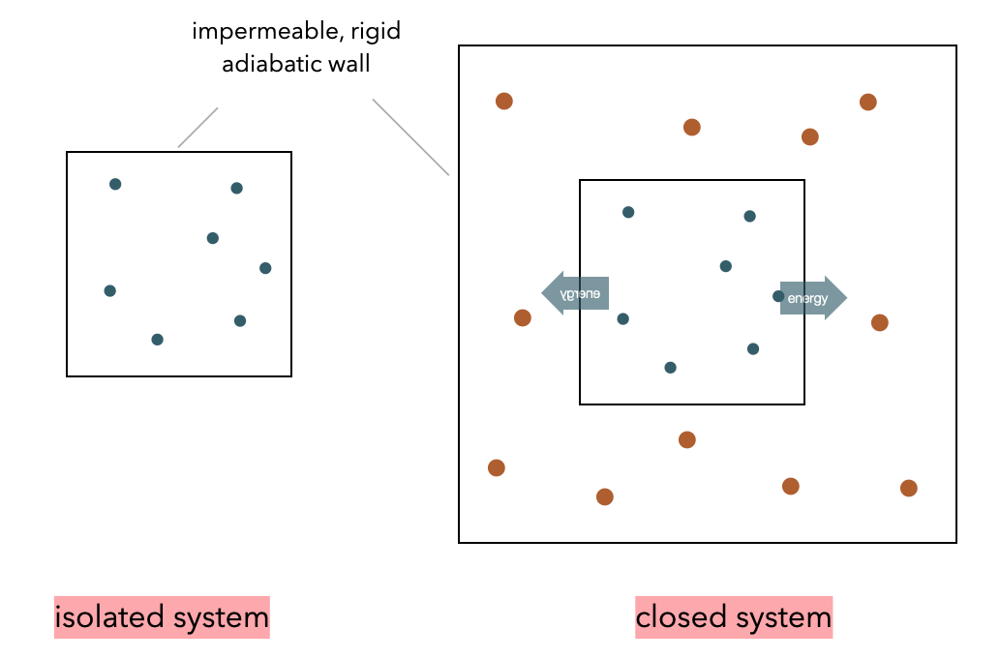

This page was generated from notebooks/L1/2_Thermodynamics_Statistics.ipynb.

Thermodynamics and Statistical Physics Revisited#
Thermodynamics#
Fundamental Quantities#
We can define different thermodynamic systems depending on their ability to exchange energy and particles with the environment.

A system is called isolated if it can neither exchange energy nor particles with its environment. This ensemble of particles is also called \(micro-canonical\). The energy in such a system can not fluctuate. It is a closed system if it can exchange energy with the surrounding, i.e., a heat bath keeping it at a constant temperature. The ensemble of particles in such a system corresponds to a canonical ensemble. Energy can fluctuate. In case the system can exchange also particles, it is called an open system or grand-canonical ensemble.
A thermodynamic system can be defined by state variables \(p\), \(V\) and/or \(T\). State functions are useful to formulate the laws of thermodynamics. A state function is independent of how one arrived at that particular state. They are most often used to characterize an equilibrium state.
Note: State Function and State Variables
State function is a function of state variables that depends only on the state of the system.
State variables characterize the state of a system and are independent of how the system got there.
We will refer to a number of state functions during the course. Here is a list of the most useful ones:
Internal energy \(U\) (state function):
State function. The total energy contained in a thermodynamic system. It is the energy necessary to create the system with the major components kinetic energy and potential energy.
\begin{equation} U=Q+W \end{equation}
The internal energy can be changed by supplying heat or doing work on the system such that
\begin{equation} dU=dQ-pdV \end{equation}
Enthalpy \(H\) (state function):
The enthalpy \(H\) of a system is measuring the internal energy plus the product of volume and pressure.
\begin{equation} H=U+pV \end{equation}
The enthalpy is especially useful for a system at constant pressure \(p={\rm const.}\), i.e., for processes where the volume can not be controlled.
\begin{equation} \mathrm{d}H=\mathrm{d}U+p\mathrm{d}V+V\mathrm{d}p=\delta Q + V\mathrm{d}p \end{equation}
In this case the change in enthalpy of a system corresponds to the exchanged heat.
Entropy \(S\) (state function):
The change of entropy of a system is given by \begin{equation} \mathrm{d}S=\frac{\delta Q}{T}, \end{equation}
where \(T\) denotes the temperature and \(\delta Q\) the heat exchanged in a reversible process.
Free Energy \(G\) or \(F\) (state function):
Free energies are useful for systems which can exchange energy with the environment but not particles. In such non-isolated systems we define the
Gibbs Free Energy
\begin{equation} G=H-TS \end{equation}
for a system with constant pressure and
Helmholtz Free Energy
\begin{equation} F=U-TS \end{equation}
for a system with constant volume. Both quantities are used to indicate in which direction physical or chemical processes proceed. After we have written down the two first laws of thermodynamics, we will have a look at a specific example.
Laws of Thermodynamics#
First Law of Thermodynamics#
The internal energy \(U\) is connected to the first law of thermodynamics:
\begin{equation} \mathrm dU=\delta Q+\delta W=\delta Q-p\mathrm dV \end{equation}
which states, that the energy contained in a system can be changed by providing heat or performing mechanical work on the system. Here \(\delta Q\) and \(\delta W\) are no state functions. They characterize a process of delivering heat or performing mechanical work.
Note: First Law of Thermodynamics
The internal energy of a system can only be changed by exchanging heat with the environment or by doing mechanical work on it (energy cannot appear or disappear).
Second Law of Thermodynamics#
While the internal energy \(U\) may be fixed (i.e., \(\mathrm{d}U=0\)), the system may exist in different configurations (see, for example, and ideal gas with different arrangements of molecules). Such an isolated system will always evolve such that the change in entropy is positive or zero (\(\mathrm{d}S\ge 0\)). This is equivalent to the formulation that the entropy becomes maximized.
Note: Second Law of Thermodynamics
When an isolated system is left alone long enough it evolves to thermal equilibrium whose entropy is at least as great as before (\(\mathrm{d}S \gt 0\)).
Example: Closed System in Contact with Reservoir
Look at the above figure of the closed systems (inner part) inside a temperature bath (reservoir). If we apply the 2nd Law of thermodynamics to reservoir and system we write down
\begin{equation} \mathrm{d}S_{\rm tot}=\mathrm{d}S_{\rm R}+ \mathrm{d}S_{\rm S}\ge 0. \end{equation}
The system may exchange energy with the reservoir and, thus, according to the 1st Law of thermodynamics we have
\begin{equation} \mathrm{d}U_{\rm R}=T\mathrm{d}S_{\rm R}-p \mathrm{d}V_{\rm R} \end{equation}
with \(T\) being the constant temperature of the reservoir. We may transform this equation and insert it into the 2nd law to obtain:
\begin{equation} \mathrm{d}S_{\rm S}+\frac{\mathrm{d}U_{\rm R}}{T}+\frac{p}{T}\mathrm{d}V_{\rm R}\ge 0. \end{equation}
Using \(\mathrm{d}U_{\rm R}=-\mathrm{d}U_{\rm S}\) and \(\mathrm{d}V_{\rm R}=-\mathrm{d}V_{\rm S}\) we can transform the equation for constant pressure and temperature to
\begin{equation} \mathrm{d}G=\mathrm{d}(U_{\rm S}+pV_{\rm S}-TS_{\rm S})\le 0. \end{equation}
This indicates the direction in which a closed system, that can exchange energy with a bath, develops according to the 2nd Law of thermodynamics.
If we bring a small system into thermal contact with a reservoir, which is in equilibrium at temperature T, then the reservoir will stay in equilibrium at the same temperature, but the small system will come to a new equilibrium, which minimizes the free energy.
Thus, in equilibrium the free energy reaches a minimum value. Free energy minimization does two things at the same time: It tries to minimize the internal energy/enthalpy as well as to maximize the entropy (due to the negative sign in front of the entropy term) of a non-isolated object. The free energy minimum is, thus, the optimal balance between the two extrema.